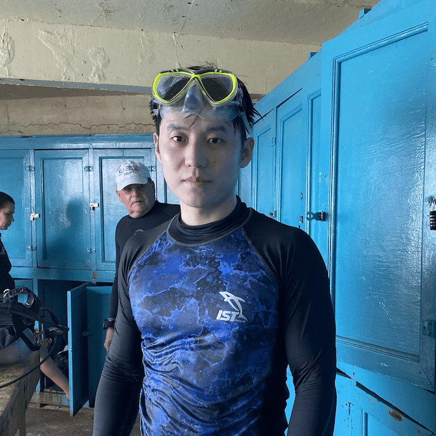

|  | Email address: bzhang388 <at> wisc <dot> edu Postal address: Offce: 818 Van Vleck Hall |
I am a second-year Ph.D. student in Mathematics at the University of Wisconsin-Madison.
I am broadly interested in Applied and Computational Mathematics.
My advisors are Dr. Qin Li and Dr. Leonardo Andrés Zepeda Núñez.
I received my B.A. in Applied Mathematics and Computer Science from UC Berkeley in 2020.